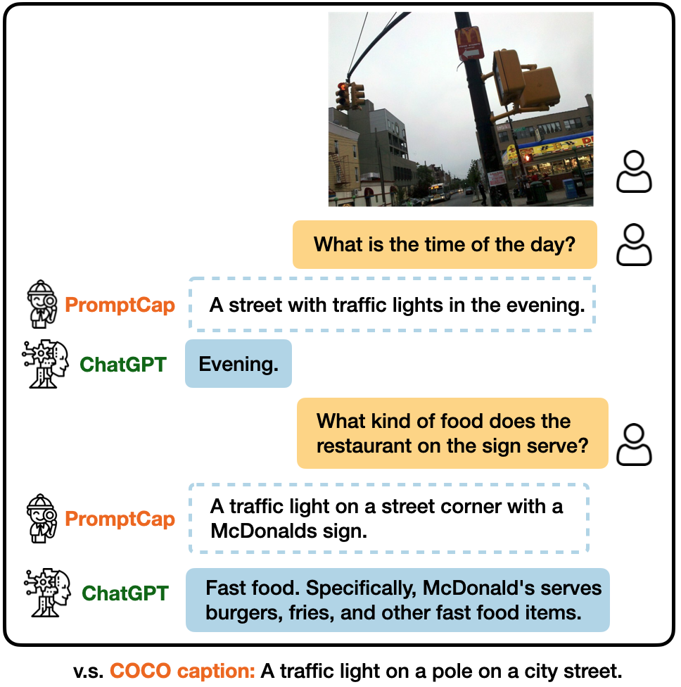

Illustration of VQA with and ChatGPT.
PROMPTCAP Illustration of VQA with PROMPTCAP and ChatGPT. PROMPTCAP is designed to work with black-box language models (e.g., GPT-3, ChatGPT) by describing question-related visual information in the text. Different from generic captions, PROMPTCAP customizes the caption according to the input question prompt, which helps ChatGPT understand the image and give correct an- swers to the user. In contrast, ChatGPT cannot infer the answers from the vanilla human-written caption from COCO.
